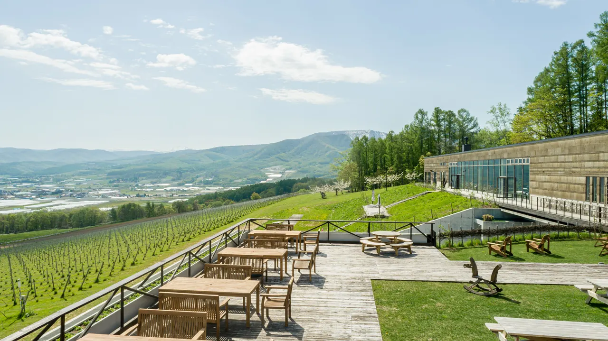
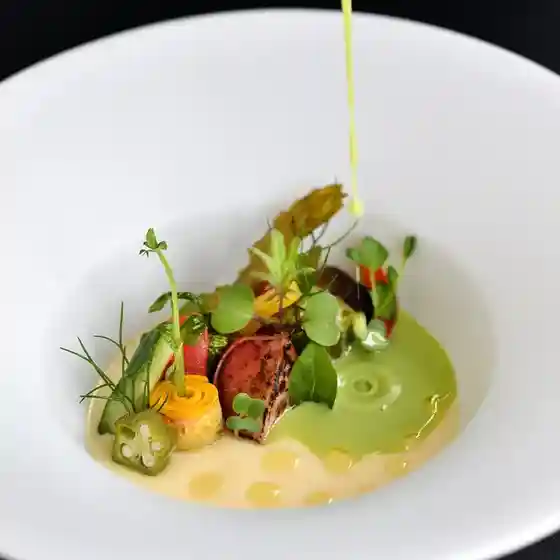
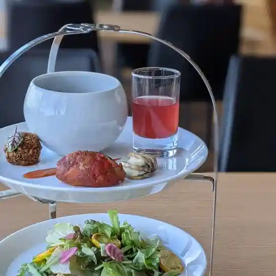
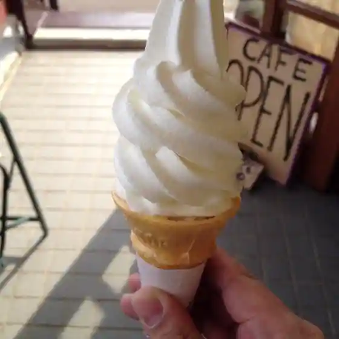
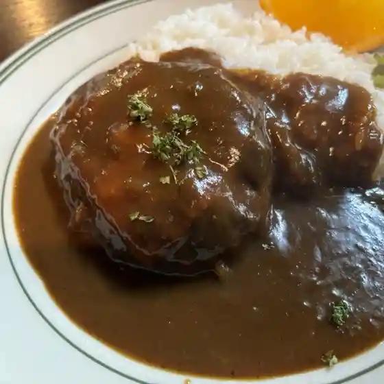
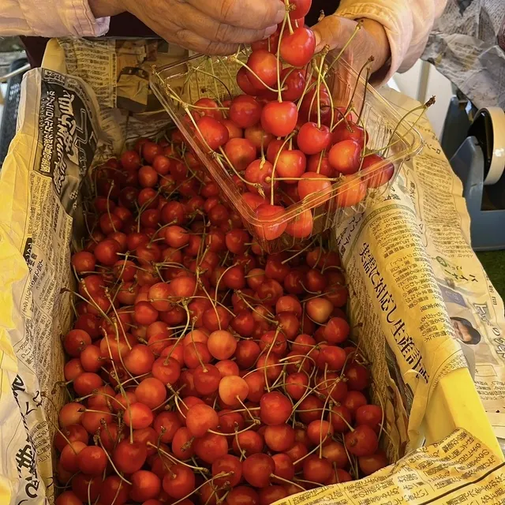
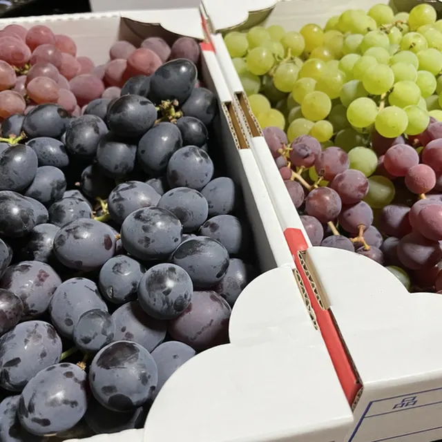

Niki
Niki · Hokkaido
Niki
Highlighted on the Hokkaido map.

Stay
NIKI Hills Winery
Niki Hills Winery
Dining
アペルシュ

Aperushu
NIKI Hills ワイナリー

Niki Hills Wainarii
NIKIテラス
Niki Terasu
大江学園ティールーム陶芸館

Ooe Gakuen Teiiruumu Tougei Kan
ラック・ル・ジューン

Rakku Ru Juun
ふきのとう

Fukinotou
くだもの公園 山田園

Kudamono Kouen Yamada Sono
フルーツロード 坂東園

Furuutsuroodo Bandou Sono
仁木食堂
Niki Shokudou
村田果樹園
Murata Kajuen
Niquis Miquis
Niquis Miquis
naritaya
Naritaya
大野園
Oono Sono
MOUNT NIKI
Mount Niki
とうりゃんせ
Touryanse
季節料理 こぶし
Kisetsu Ryouri Kobushi
きのこ王国 仁木店
Kinoko Oukoku Niki Mise
笠井園
Kasai Sono
セブンイレブン 仁木北町店
Sebun'Irebun Niki Kitamachi Mise
もり園
Mori Sono
ファームランド にき
Faamurando Niki
niki cafe
Niki Cafe
シーヅブラン
Shiizuburan
にきや 本店
Nikiya Honten
Sights
NIKI Hills Winery (Niki Hiruzu Wainarii)
NIKI Hills Winery (Niki Hiruzu Wainarii)